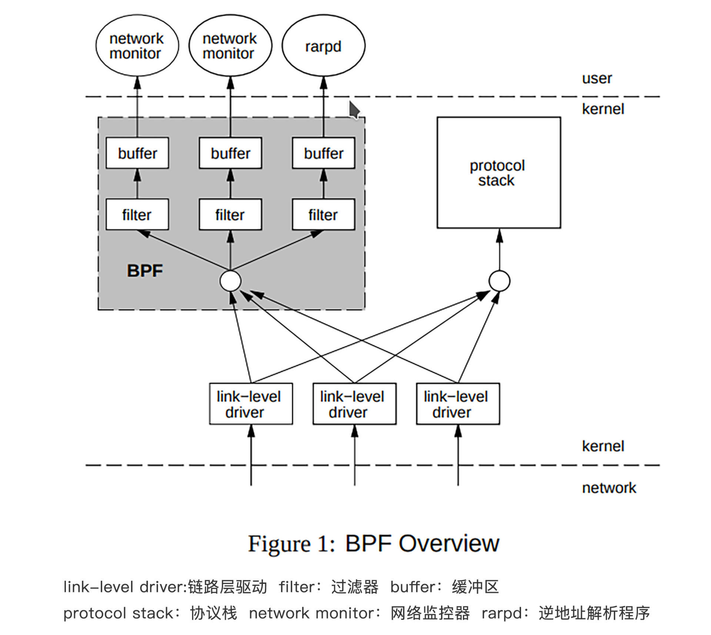
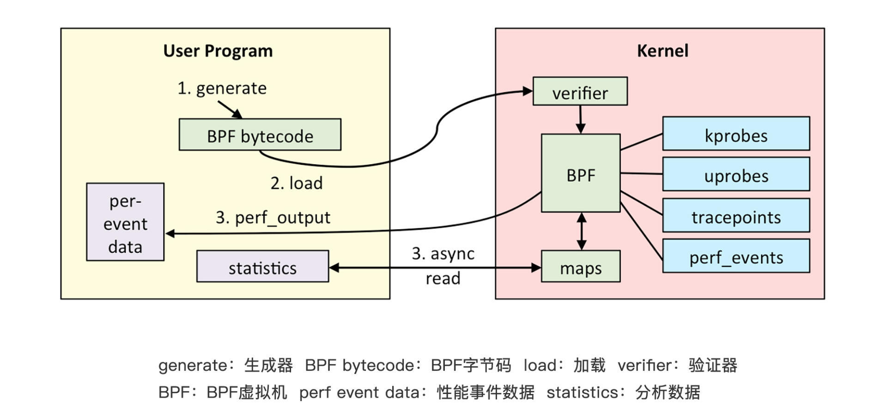
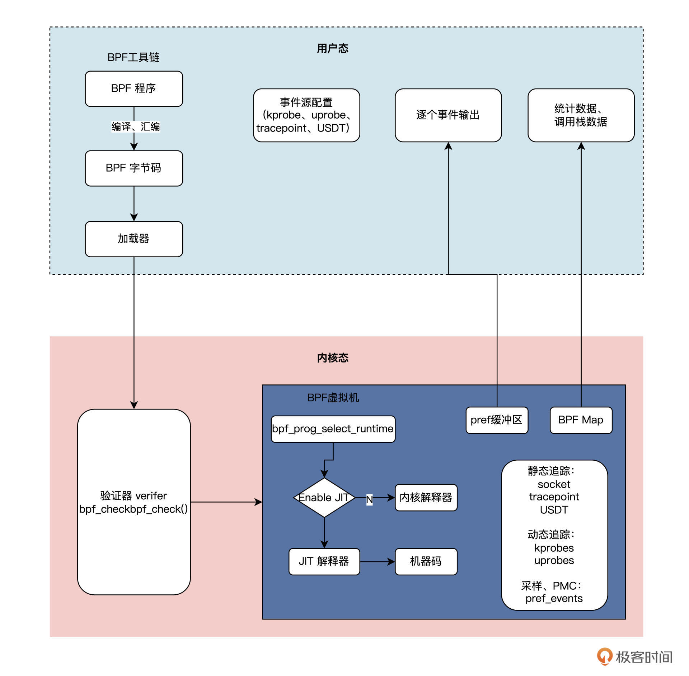
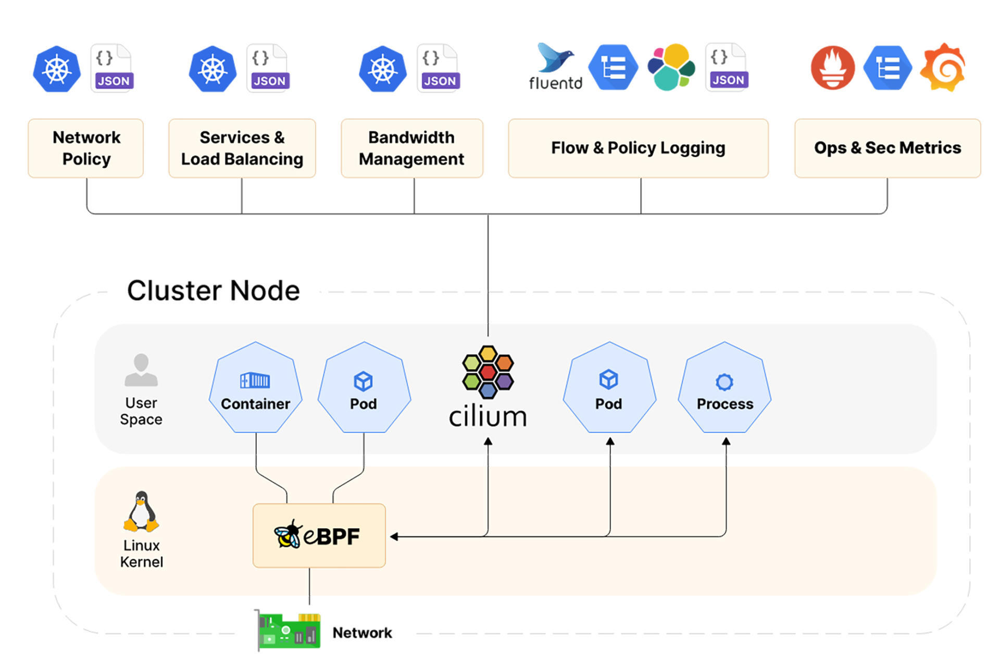
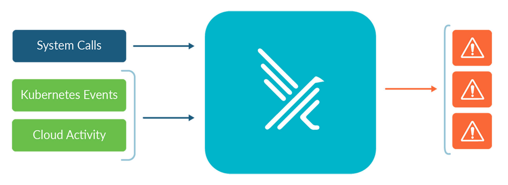
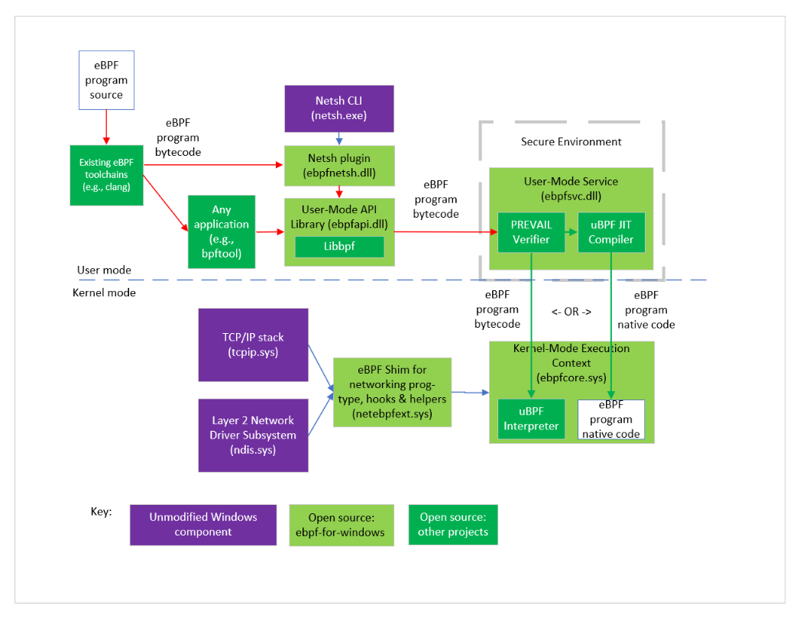
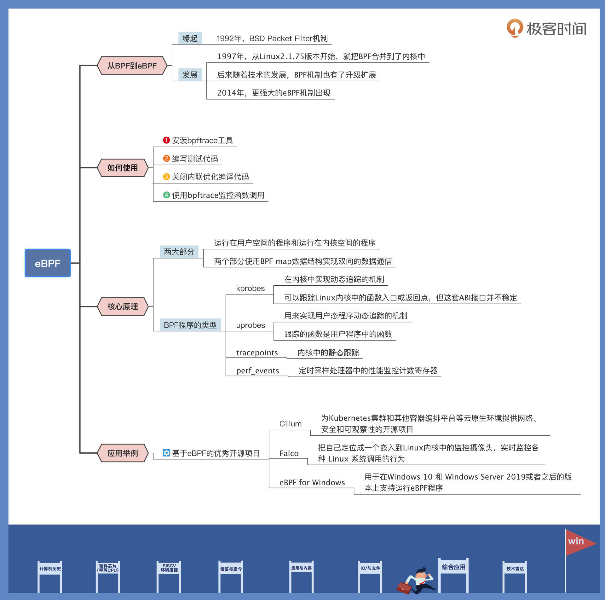

- 00 开篇词 练好基本功，优秀工程师成长第一步.md
- 01 CISC & RISC：从何而来，何至于此.md
- 02 RISC特性与发展：RISC-V凭什么成为“半导体行业的Linux”？.md
- 03 硬件语言筑基（一）：从硬件语言开启手写CPU之旅.md
- 04 硬件语言筑基（二）_ 代码是怎么生成具体电路的？.md
- 05 指令架构：RISC-V在CPU设计上到底有哪些优势？.md
- 06 手写CPU（一）：迷你CPU架构设计与取指令实现.md
- 07 手写CPU（二）：如何实现指令译码模块？.md
- 08 手写CPU（三）：如何实现指令执行模块？.md
- 09 手写CPU（四）：如何实现CPU流水线的访存阶段？.md
- 10 手写CPU（五）：CPU流水线的写回模块如何实现？.md
- 11 手写CPU（六）：如何让我们的CPU跑起来？.md
- 12 QEMU：支持RISC-V的QEMU如何构建？.md
- 13 小试牛刀：跑通RISC-V平台的Hello World程序.md
- 14 走进C语言：高级语言怎样抽象执行逻辑？.md
- 15 C与汇编：揭秘C语言编译器的“搬砖”日常.md
- 16 RISC-V指令精讲（一）：算术指令实现与调试.md
- 17 RISC-V指令精讲（二）：算术指令实现与调试.md
- 18 RISC-V指令精讲（三）：跳转指令实现与调试.md
- 19 RISC-V指令精讲（四）：跳转指令实现与调试.md
- 20 RISC-V指令精讲（五）：原子指令实现与调试.md
- 21 RISC-V指令精讲（六）：加载指令实现与调试.md
- 22 RISC-V指令精讲（七）：访存指令实现与调试.md
- 23 内存地址空间：程序中地址的三种产生方式.md
- 24 虚实结合：虚拟内存和物理内存.md
- 25 堆&栈：堆与栈的区别和应用.md
- 26 延迟分配：提高内存利用率的三种机制.md
- 27 应用内存管理：Linux的应用与内存管理.md
- 28 进程调度：应用为什么能并行执行？.md
- 29 应用间通信（一）：详解Linux进程IPC.md
- 30 应用间通信（二）：详解Linux进程IPC.md
- 31 外设通信：IO Cache与IO调度.md
- 32 IO管理：Linux如何管理多个外设？.md
- 33 lotop与lostat命令：聊聊命令背后的故事与工作原理.md
- 34 文件仓库：初识文件与文件系统.md
- 35 Linux文件系统（一）：Linux如何存放文件？.md
- 36 Linux文件系统（二）：Linux如何存放文件？.md
- 37 浏览器原理（一）：浏览器为什么要用多进程模型？.md
- 38 浏览器原理（二）：浏览器进程通信与网络渲染详解.md
- 39 源码解读：V8 执行 JS 代码的全过程.md
- 40 内功心法（一）：内核和后端通用的设计思想有哪些？.md
- 41 内功心法（二）：内核和后端通用的设计思想有哪些？.md
- 42 性能调优：性能调优工具eBPF和调优方法.md
- 先睹为快：迷你CPU项目效果演示.md
- 加餐01 云计算基础：自己动手搭建一款IAAS虚拟化平台.md
- 加餐02 学习攻略（一）：大数据&云计算，究竟怎么学？.md
- 加餐03 学习攻略（二）：大数据&云计算，究竟怎么学？.md
- 加餐04 谈谈容器云与和CaaS平台.md
- 加餐05 分布式微服务与智能SaaS.md
- 国庆策划01 知识挑战赛：检验一下学习成果吧！.md
- 国庆策划02 来自课代表的学习锦囊.md
- 国庆策划03 揭秘代码优化操作和栈保护机制.md
- 温故知新 思考题参考答案（一）.md
- 用户故事 我是怎样学习Verilog的？.md
- 结束语 心若有所向往，何惧道阻且长.md
42 性能调优：性能调优工具eBPF和调优方法
你好，我是LMOS。
在之前的学习中，我们了解到了很多计算机基础相关的知识，也学过了iostat等观察系统运行状态的命令。但在我们的实际工程中，排查分析一些具体的性能优化问题或者定位一些故障时，可能需要在不同的命令间来回切换、反复排查。
那么有没有一款工具可以贯穿操作系统的各个模块，帮我们准确分析运行的程序、系统的运行细节呢？当然有，答案就是eBPF。
从BPF到eBPF
eBPF是怎么来的，还要从1992年说起。当年伯克利实验室的Steven McCanne和Van Jacobso为了解决高性能的抓包、分析网络数据包的问题，在BSD操作系统上设计出了一种叫做伯克利数据包过滤器（BSD Packet Filter）的机制，并发表了《The BSD Packet Filter:A New Architecture for User-level Packet Capture》这篇论文（论文链接在这里）。
为了让内核态能够高效率地处理数据包，这套机制引入了一套只有2个32位寄存器、16个内存位和32个指令集的轻量级虚拟机，包过滤技术的性能因此提升了20多倍。
因为这套方案设计的太好用了，后来在1997年的时候，Linux操作系统从Linux2.1.75版本开始，就把BPF合并到了内核中了。
早期的BPF的架构是这样子的：

从这张架构图中我们可以看出，当数据报文从设备驱动上传输过来之后，首先会被分流到BPF，这时候BPF会执行内部的过滤逻辑处理数据报文，当然这个处理逻辑也是可以灵活自定义的。
然后，BPF就会把处理好的数据报文转给对应的用户程序。如果某些设备驱动发过来的数据,找不到对应的BPF处理逻辑的话，则会由正常的协议栈来处理。
听完这段原理，你会不会觉得，这是一个只适合抓包分析网络数据的机制？
没错，早期的时候BPF机制，确实也是用在tcpdump之类的抓包分析工具上的。只是后来随着技术的发展，BPF机制也有了升级扩展，不但加入了JIT即时编译技术来提升性能，还引入了如Seccomp之类的安全机制。
这么优秀灵活的机制只用来分析网络数据，未免大材小用。所以，后来2014年的时候Alexei Starovoitov 和 Daniel Borkmann沿着这条路，设计出了更强大的eBPF机制。
eBPF不仅仅能实现传统的数据报文过滤，还把自己变成了一个运行在操作系统内核中的沙盒，基于它可以在不修改内核代码、不加载额外的内核模块的前提下，安全、高效地扩展内核的功能。有了它，我们就可以让自己的程序站在操作系统内核的“上帝视角”，随时灵活地监控调整程序的运行状态，堪称神器。
讲了这么多，有没有勾起你对eBPF的好奇？那么让我们先来看一下eBPF的架构简图吧：

首先，我们编写好的BPF程序会被Clang、LLVM等工具编译成BPF的字节码（因为BPF程序并不是普通的ELF程序，而是要运行在虚拟机中的字节码）。eBPF程序中还会包含配置的事件源，所谓事件源其实就是一些需要hook的挂载点。
加载器会在程序运行前通过eBPF系统调用加载到内核，这时候验证器会验证字节码的安全性，比如校验循环次数必须在有限时间内结束等。当校验通过后，一旦挂载的事件发生，回调到你的字节码，就会在eBPF虚拟机中执行字节码中的逻辑了。
如何使用eBPF
接下来我们说说怎么使用eBPF。我们需要在Ubuntu 20.04 系统上执行 sudo apt-get install -y bpftrace命令安装bpftrace工具。
然后编写后面这段man.go测试代码：
package main
func main() {
println(sum(3, 5))
}
func sum(a, b int) int {
return a + b
}
接下来，我们要执行go build -gcflags=“-l” ./main.go 命令关闭内联优化编译代码。因为如果内联优化了的话，很可能Go的编译器会在编译期消除函数调用，这样我们的eBPF就会找不到函数对应的探针了。- 下一步，我们使用bpftrace监控这个函数调用，就会发现下面的输出：
shell> bpftrace -e '
uprobe:./main:main.sum {printf("a: %d b: %d\n", reg("ax"), reg("bx"))}
uretprobe:./main:main.sum {printf("retval: %d\n", retval)}
'
a: 3 b: 5
retval: 8
你看，我们写的代码一行都没改，eBPF却帮我们把程序运行中的变量捕获出来了，是不是很神奇？那么eBPF是怎么实现这么神奇的功能的呢？这个问题，你听我讲完eBPF的原理就明白了。
eBPF的核心原理
在讲解eBPF的原理之前，我们先来看看eBPF的整体架构图。根据架构图一步步了解核心原理。
eBPF 整体结构图如下：

我们对照结构图分析一下eBPF的工作原理。
eBPF分为两部分，分别是运行在用户空间的程序和运行在内核空间的程序。用户空间程序负责把BPF字节码加载到内核空间的eBPF虚拟机中，并在需要的时候读取内核返回的各种事件信息、统计信息；而内核中的BPF虚拟机负责执行内核中的特定事件，如果需要传递数据，就将执行结果通过BPF map 或perf缓冲区中的perf-events 发送至用户空间。
那这两部分是怎么“沟通”的呢？两者可以使用BPF map数据结构实现双向的数据通信（上图右下角的BPF MAP），这为内核中运行的BPF字节码程序提供了更灵活的控制能力和数据交换能力。
内核中用户空间程序与BPF字节码交互的主要过程是这样的：首先，我们可以使用LLVM 或GCC工具，将程序从BPF 代码编译为BPF 字节码。然后我们通过Loader加载器，将字节码加载到内核中。内核使用验证组件，是用来保证执行字节码的安全性，避免内核异常的。在确认字节码安全执行后，加载器会加载相应的内核模块。
BPF程序的类型包括：kprobes、uprobes、tracepoint、perf_events几种，具体含义如下：
- kprobes：是一种在内核中实现动态追踪的机制，可以跟踪Linux内核中的函数入口或返回点，但这套ABI接口并不稳定。不同的内核版本的变化带来的ABI差异，有可能会导致跟踪失败。
- uprobes：用来实现用户态程序动态追踪的机制。与kprobes类似，区别在于跟踪的函数是用户程序中的函数而已。
- tracepoints：内核中的静态跟踪。Tracepoints是内核开发者维护的tracepoint，可以提供稳定的ABI接口，但是由于开发者维护，数量和场景可能会受到限制。
- perf_events：定时采样处理器中的性能监控计数寄存器（Performance Monitor Counter）。
所以看到这里，你可能看出门道了，原来eBPF能用上帝视角观察各种程序，关键就在于“内核中有自己人”。
eBPF 虚拟机则是相当于一个在内核中的、安全的“后门”，而在虚拟机上运行的BPF 字节码程序可以使用BPF map数据结构和perf-event这两种机制，将测量数据“偷偷”传递到用户空间。
eBPF还能应用在哪里？
由于eBPF强大的扩展能力，目前业界已经有很多项目用它来实现生产环境中的观测、调试、性能优化、动态扩展等功能了。
我们都知道，开源项目是工程师的技术学习宝藏，通过学习开源项目，我们可以学习到业界最前沿的工程应用实战思路。接下来我就给你介绍一些基于eBPF的优秀开源项目吧。
Cilium
Cilium是一个为Kubernetes集群和其他容器编排平台等云原生环境提供网络、安全和可观察性的开源项目。
Cilium的基础当然也是eBPF啦，它能够将安全逻辑、可见性逻辑和网络控制等逻辑动态插入Linux内核，十分强大。基于这些扩展出的内核能力，Cilium可以提供像高性能网络、多集群和多云能力、高级负载平衡、透明加密、网络安全能力、透明可观察性等很多能力。
看到这里，可能熟悉后端的小伙伴就好奇了：“我们明明也可以用Wireshark、tcpdump之类的工具来分析网络，也可以基于K8S的Pod机制，轻松实现Sidecar架构模式，以此透明地扩展容器的功能，那么我们为什么还要用Cilium呢？”
其实，在现代分布式系统架构中，不仅仅有传统的TCP协议、HTTP协议，还会引入像GRPC、QUIC等比较新的协议。同时，随着分布式系统规模的增加，会引入很多类似于Kafka、Elasticsearch、Redis之类的各种中间件，这也使得传统的抓包分析工具越来越捉襟见肘。
基于Pod的Sidecar架构模式中容器本质也是运行在用户态的进程，所以免不了增加用户态/内核切换、拷贝等操作带来的开销。
而Cilium则是基于eBPF，直接把这些逻辑动态的扩展到了内核中，所以性能会远高于传统的方法，你可以对照下面的架构图看一看。

从图中我们可以看得出，Cilium使用了eBPF机制，在Linux内核中直接扩展出了对容器中的各种网络协议的观测能力。这样既实现了高性能对系统进行观测，又扩展更多字节码程序，进而支持更多种类的协议。
Falco
你听说过“容器逃逸”这种黑客攻击手段么？这种攻击手法可以让运行在容器沙盒中的恶意程序跳出沙盒攻击到宿主机中，从而实现突破限制、获得更高的权限的目的。比如著名的CVE-2019-5736、CVE-2019-14271、脏牛等就是典型的容器逃逸漏洞。
如果你对容器的了解还不深入，可能觉得奇怪。容器不是类似于一台“虚拟机”么？不是说容器内外是隔离的，容器内的操作不会影响容器外么？那这类逃逸的攻击方式又要怎么防御呢？
其实，每一个运行中的容器只是同一个宿主机上不同的进程，特殊的地方是用namespace、cgroup、UnionFS之类的技术手段，给容器中的每个进程创造出一种独占一台机器的假象。
这意味着运行在同一台机器上的每个容器，虽然从表面上看他们是互相隔离的，但实际上他们都共用了同一套操作系统内核。这也就为容器安全埋下了隐患。容器实现机制的更多内容，你有兴趣的话，可以看看第一季里[第四十四节课]的讲解。
那么这类问题是不是就无解了呢？显然不是，Falco这个项目就是为解决这类安全问题而生的。

Falco的核心思想是，把自己定位成一个嵌入到Linux内核中的监控摄像头，实时监控各种 Linux 系统调用的行为，并根据其不同的调用、参数及调用进程的属性来触发警告。
Falco 可以检测的范围非常广，比如：
- 容器内运行的 Shell
- 服务器进程产生意外类型的子进程
- 敏感文件读取（如 /etc/shadow）
- 非设备文件写入至 /dev
- 系统的标准二进制文件（如 ls）产生出站流量
有了这些能力之后，Falco就可以根据安全策略，来决定什么时候是安全的行为，什么时候是异常的攻击行为，从而做到防患于未然，提升系统的安全性。
eBPF for Windows
微软也发现了eBPF的强大功能和潜力，在2021年5月的时候微软也发布了eBPF for Windows这个项目，用于在Windows 10 和 Windows Server 2019或者之后的版本上支持运行eBPF程序。
这个设计也是比较巧妙的，eBPF 工具链编译出的字节码，首先会发到用户态的静态验证器来进行验证。当验证字节码通过了验证之后，就会被加载到Windows NT 内核中，这时候，eBPF程序就可以hook调用eBPFshim模块来提供暴露的各种API了。这样，Windows系统也就拥有了eBPF的强大的动态扩展能力了。
整个过程如下图所示:

重点回顾
今天我们学习了eBPF的形成历史、设计思想和核心原理。了解了eBPF是怎么做到像乐高积木一样，灵活动态地扩展内核功能。另外，我还给你分享了eBPF在业界比较优秀的开源实践项目。
这节课的要点我梳理了导图，供你参考。

如果今天讲的内容你只能记住一件事，那请记住：eBPF是如何把“自己人”送进内核，最终和“自己人”里应外合、传递各种信息的思路。
思考题
请你思考一下，eBPF如果被误用，有没有可能带来新的安全问题呢？
期待你在留言区和我交流互动，也推荐你把这节课，分享给更多朋友。
© 2019 - 2023 Liangliang Lee. Powered by Vert.x and hexo-theme-book.